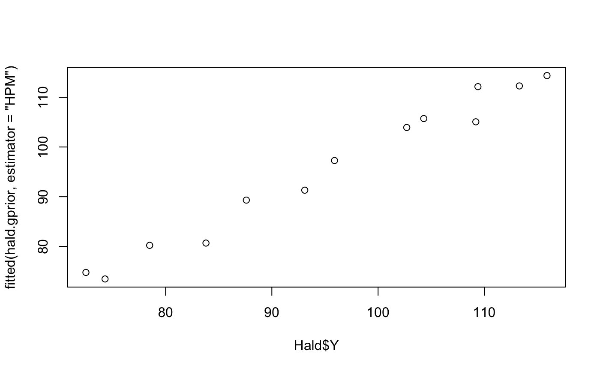
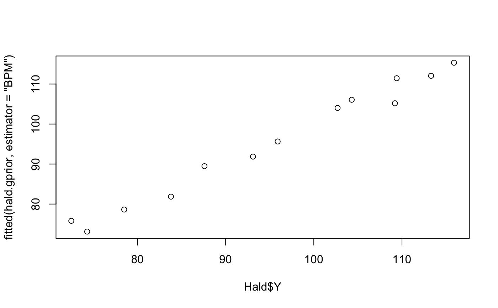

Calculate fitted values for a BAS BMA object
# S3 method for bas fitted(object, type = "response", estimator = "BMA", top = NULL, na.action = na.pass, ...)
| object | An object of class 'bma' as created by |
|---|---|
| type | type equals "response" is currently the only option. Prior to version 1.2.2 type was used to specify the type of estimator. In order to be consistent with the predict.bas function this has been deprecated and replaced with the estimator option below |
| estimator | estimator type of fitted value to return. Default is to use
BMA with all models. Options include |
| top | optional argument specifying that the 'top' models will be used in constructing the BMA prediction, if NULL all models will be used. If top=1, then this is equivalent to 'HPM' |
| na.action | function determining what should be done with missing values in newdata. The default is to predict NA. |
| ... | optional arguments, not used currently |
A vector of length n of fitted values.
Calcuates fitted values at observed design matrix using either the highest probability model, 'HPM', the posterior mean (under BMA) 'BMA', the median probability model 'MPM' or the best predictive model 'BPM". The median probability model is defined by including variable where the marginal inclusion probability is greater than or equal to 1/2. For type="BMA", the weighted average may be based on using a subset of the highest probability models if an optional argument is given for top. By default BMA uses all sampled models, which may take a while to compute if the number of variables or number of models is large. The "BPM" is found be computing the squared distance of the vector of fitted values for a model and the fitted values under BMA and returns the model with the smallest distance. In the presence of multicollinearity this may be quite different from the MPM, with extreme collinearity may drop relevant predictors.
Barbieri, M. and Berger, J.O. (2004) Optimal predictive model
selection. Annals of Statistics. 32, 870-897.
http://projecteuclid.org/Dienst/UI/1.0/Summarize/euclid.aos/1085408489
Clyde, M. Ghosh, J. and Littman, M. (2010) Bayesian Adaptive Sampling for
Variable Selection and Model Averaging. Journal of Computational Graphics
and Statistics. 20:80-101
http://dx.doi.org/10.1198/jcgs.2010.09049
Other bas methods: BAS, bas.lm,
coef.bas, confint.coef.bas,
confint.pred.bas,
diagnostics,
force.heredity.bas,
image.bas, predict.basglm,
predict.bas, summary.bas,
update.bas
Other predict methods: predict.basglm,
predict.bas
data(Hald) hald.gprior = bas.lm(Y~ ., data=Hald, prior="ZS-null", initprobs="Uniform") plot(Hald$Y, fitted(hald.gprior, estimator="HPM"))plot(Hald$Y, fitted(hald.gprior, estimator="BMA", top=3))plot(Hald$Y, fitted(hald.gprior, estimator="MPM"))plot(Hald$Y, fitted(hald.gprior, estimator="BPM"))